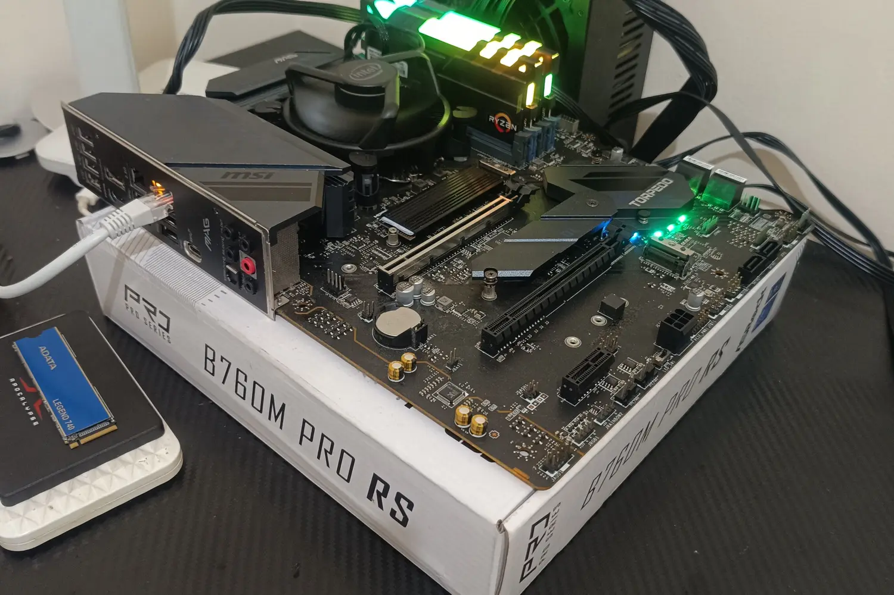

Self-Hosted Home Lab
Farhan Kurnia Febriansyah
Preprint. An ongoing saga: details may change while the server keeps running without a case.
Abstract
Proxmox + TrueNAS SCALE on ZFS, exposed through Tailscale and Cloudflare Tunnel behind CGNAT. The infrastructure this site runs on.

Table 1: Specification.
| Parameter | Value |
|---|---|
| Year | 2025 |
| Status | Ongoing saga |
| Uptime | 99% (i hope) |
| Stack | Proxmox, TrueNAS, ZFS, Docker, Tailscale, Cloudflare Tunnel |
| Case | none |
1Introduction
The lab runs on a Intel machine with Proxmox as the hypervisor, hosting a mix of Linux VMs and containers. Storage lives on TrueNAS SCALE with a ZFS pool.
Since the home ISP connection sits behind CGNAT, inbound access was never going to work through simple port forwarding. Tailscale handles private access to internal services, while a Cloudflare Tunnel exposes the public-facing pieces, including this very site, without opening a single inbound port on the router.
2Ongoing work
Ongoing work includes tuning linux to work better on low memory situation (ram is expensive man).
Also this server is literally caseless, i didn't bother to buy another case xD
3Gallery
(a)
(b)
(c)
References
- 1Farhan Kurnia Febriansyah. About the author.
- 2Revision history of this site.